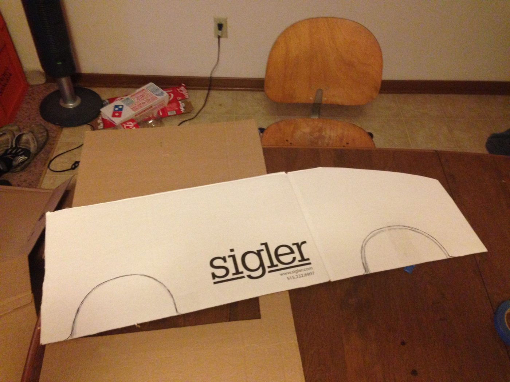
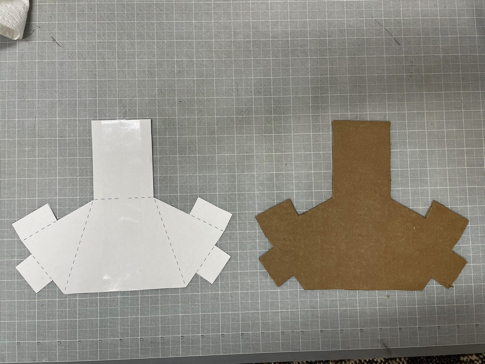

1
Plantilla y medidas
Dibujen el kart de lado en un cartón grande a tamaño real. Este dibujo es la plantilla de todo: de él salen las costillas, el largo de la piel y dónde va el hueco del cuerpo.
- Largo 100 cm, ancho 65 cm, alto 40 cm en la cola y 30 en la trompa.
- Hueco del cuerpo: óvalo de 45 × 40 cm, un poco atrás del centro. Pruébenlo con la persona que lo va a usar.
- Llantas de 28 cm de diámetro. Las traseras un poco más atrás que el borde, las delanteras casi en la trompa.
- Antes de cortar, midan la puerta del carro en el que van a ir a la fiesta.
Truco: el "Standard Kart" de Mario Kart 8 es el molde más fácil. Hagan una sola plantilla y los cuatro karts salen de la misma, solo cambian el color y los adornos. Si no quieren dibujar, el tutorial de Instructables trae los patrones en PDF para imprimir a tamaño real.

